Vier Tore, drei Punkte: SCH löst Heimaufgabe gegen Suhl souverän
Der SCH hat am sechsten Spieltag der Verbandsliga die passende Antwort auf die Niederlage in Weida gegeben. Vor 205 Zuschauern setzte sich die Ludwig-Elf mit 4:0 (2:0) gegen den 1. Suhler SV 06 durch. Maciej Wolanski traf doppelt, dazu waren Martin Fiedler und Ole Hoch erfolgreich. Am Ende stand ein klarer Heimsieg, mit dem die Blau-Weißen ihre Pflichtaufgabe souverän erfüllten.
Geduld zahlt sich aus
Die Ausgangslage vor der Partie war klar. Der SCH wollte nach dem 1:3 in Weida zurück in die Spur, während die Gäste aus Südthüringen nach fünf Niederlagen aus den ersten fünf Ligaspielen noch ohne Punkt angereist waren. Suhl hatte bis dahin drei eigene Treffer erzielt und bereits 20 Gegentore hinnehmen müssen. Der SCH ging mit sieben Punkten und einem ausgeglichenen Torverhältnis von 7:7 in den sechsten Spieltag.
Trotz dieser Voraussetzungen brauchte es Geduld. Fast eine halbe Stunde blieb die Partie ohne Treffer. Dann gelang den Blau-Weißen der Durchbruch. In der 26. Minute brachte Maciej Wolanski den SCH mit 1:0 in Führung. Acht Minuten später legte die Ludwig-Elf nach. Martin Fiedler traf in der 34. Minute nach einem Torwartfehler zum 2:0 und sorgte damit noch vor der Pause für eine komfortable Ausgangslage. Aus einem lange torlosen ersten Durchgang waren innerhalb weniger Minuten klare Verhältnisse geworden.
Wolanski legt vom Punkt nach
Nach dem Seitenwechsel benötigten die Blau-Weißen nicht lange, um die Partie weiter in ihre Richtung zu ziehen. Acht Minuten waren im zweiten Durchgang gespielt, als Kapitän Fabian Schnellhardt im Sechzehner zu Fall gebracht wurde. Maciej Wolanski übernahm die Verantwortung und verwandelte in der 53. Minute zum 3:0. Spätestens mit diesem Tor hatte sich die Ausgangslage für die verbleibende Spielzeit deutlich verändert. Nun ging es darum, das Ergebnis kontrolliert über die Zeit zu bringen und den Gästen keine Möglichkeit zu geben, noch einmal zurückzukommen. Das gelang. Suhl fand keinen Weg zum Anschlusstreffer, während die Blau-Weißen ihre Führung bis in die Schlussphase behaupteten.
Dass die Mannschaft trotz des klaren Spielstands noch Luft nach oben hat, machte Alexander Ludwig nach der Partie deutlich. Vor allem in Tornähe erwartet der Trainer noch mehr Klarheit und Konsequenz von seiner Mannschaft.
„Es war wieder ein Schritt in die richtige Richtung. Im letzten Drittel müssen wir aber noch zielstrebiger und konsequenter werden“,
sagte Ludwig nach dem Abpfiff.
Hoch setzt den Schlusspunkt
Ein Treffer fehlte an diesem Nachmittag noch. Und der fiel unmittelbar vor dem Ende. In der 90. Minute sorgte Ole Hoch mit dem 4:0 für den Schlusspunkt. Damit war der höchste Ligasieg der noch jungen Saison perfekt. Zugleich blieb der SCH erstmals seit dem 2:0 gegen den FC An der Fahner Höhe Ende August wieder ohne Gegentor.
Für Suhl setzte sich dagegen der schwierige Saisonstart fort. Schon vor der Partie war der Aufsteiger das einzige Team der Liga ohne Punkt gewesen. Vier Treffer, kein Gegentor und drei Punkte – viel mehr konnte man sich aus blau-weißer Sicht an diesem Nachmittag nicht wünschen. Gleichzeitig passt Ludwigs Einordnung zum Spiel: Das Ergebnis stimmt, dennoch gibt es Details, an denen weitergearbeitet werden kann.
Die passende Antwort
Nach dem enttäuschenden 1:3 eine Woche zuvor in Weida war vor allem die Reaktion gefragt. Genau die lieferte die Mannschaft. Statt die Niederlage mitzunehmen, antworteten die Blau-Weißen mit einem klaren Erfolg vor heimischem Publikum. Dabei verteilten sich die Treffer auf beide Halbzeiten. Wolanski und Fiedler stellten vor der Pause auf 2:0, Wolanski erhöhte kurz nach dem Seitenwechsel vom Elfmeterpunkt und Hoch setzte spät den Schlusspunkt. Besonders wichtig: Hinten stand zum zweiten Mal in dieser Verbandsliga-Saison die Null.
So bleibt unter dem Strich ein Nachmittag, der genau das brachte, was sich der SCH vorgenommen hatte: die Heimaufgabe erledigen, drei Punkte holen und nach der Niederlage der Vorwoche wieder ein anderes Gesicht zeigen.
Am kommenden Samstag nach Geratal
Am kommenden Samstag geht es für die Ludwig-Elf auswärts weiter. Am siebten Spieltag gastiert der SCH bei der SpVgg Geratal.
Spieldaten
1. SC 1911 Heiligenstadt – 1. Suhler SV 06 4:0 (2:0)
SC Heiligenstadt
Stankovic – Wolanski – Köhler – Abdoul Aziz (84. Jargees Ali) – Jeschke – Göbel (63. Dornieden) – Hoch – Wilhelm (70. Lerch) – Schnellhardt – Voilenko – Fiedler (70. Opfermann)
1. Suhler SV 06
Börner – Fabig (58. P. Eckstein) – Triebel – Grebenstein – P. Eckstein (58. Schmidt) – Suliman – Abraham (9. Abushrmet) – Altendorf – Yousha – Kunze (70. Keita) – El Hajj
Schiedsrichter
Panetta
Zuschauer
205
Tore
1:0 Wolanski (26.), 2:0 Fiedler (34.), 3:0 Wolanski (53. FE), 4:0 Hoch (90.)
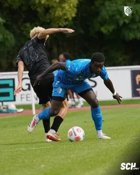
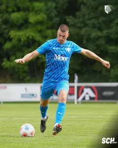
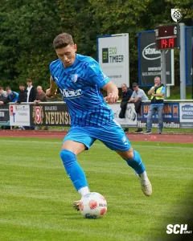
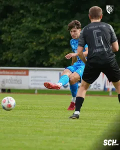
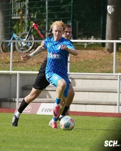
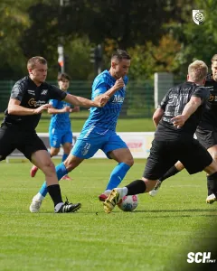
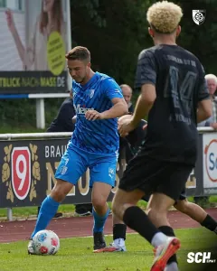
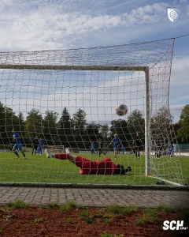
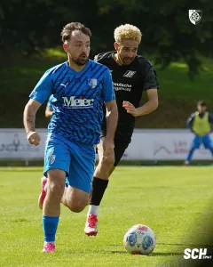
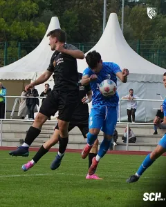
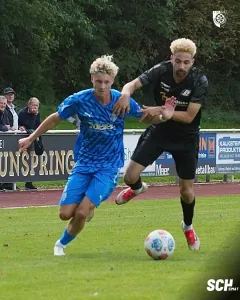
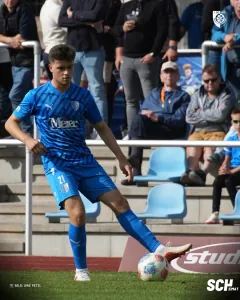
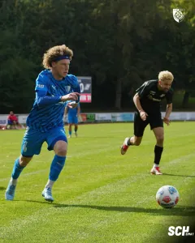
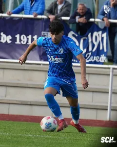
Quelle: www.sc1911-heiligenstadt.de · Stand 06.10.2026